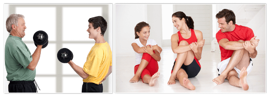
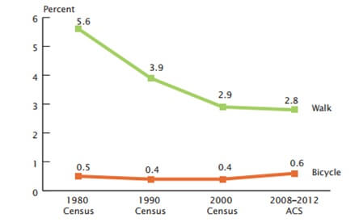

(Get active Let’s Move)
“The best way to offset tension is with physical activity”
- Bonnie prudden
Physical inactivity is the fourth leading risk factor for non communicable disease worldwide and is estimated to cause between 3.2 and 5 million deaths globally per year. Globally, physical inactivity is estimated to cause around 27% of diabetes, 30% of ischaemic heart disease and 21%–25% of breast and colon cancer. Physical activity is also fundamental in achieving energy balance and weight control.
Recent estimates show that approximately 31% of the world's population does not undertake the recommended amount of physical activity to gain protective health benefits.
- Insufficient physical activity is 1 of the 10 leading risk factors for death worldwide.
- Insufficient physical activity is a key risk factor for noncommunicable diseases (NCDs) such as cardiovascular diseases, cancer and diabetes.
- Globally, 1 in 4 adults is not active enough.
WHO recommends:
Children and adolescents aged 5-17years- Should do at least 60 minutes of moderate to vigorous-intensity physical activity daily, greater than 60 minutes daily will provide additional health benefits.
- Should include activities that strengthen muscle and bone, at least 3 times per week.
Adults aged 18–64 years- Should do at least 150 minutes of moderate-intensity physical activity throughout the week, or at least 75 minutes of vigorous-intensity physical activity throughout the week.
- For additional health benefits, adults should increase their moderate-intensity physical activity to 300 minutes per week, or equivalent.
- Muscle-strengthening activities should be done involving major muscle groups on 2 or more days a week.
Adults aged 65 years and above- Should do at least 150 minutes of moderate-intensity physical activity throughout the week, or at least 75 minutes of vigorous-intensity physical activity throughout the week.
- For additional health benefits, they should increase moderate intensity physical activity to 300 minutes per week, or equivalent.
- Those with poor mobility should perform physical activity to enhance balance and prevent falls, 3 or more days per week.
- Muscle-strengthening activities should be done involving major muscle groups, 2 or more days a week.
- More than 80% of the world's adolescent population is insufficiently physically active.
Benefits of physical activity and risk of insufficient physical activityRegular physical activity of moderate intensity – such as walking, cycling, or doing sports – has significant benefits for health.
Regular and adequate levels of physical activity:
- Improve muscular and cardiorespiratory fitness;
- Improve bone and functional health;
- Reduce the risk of hypertension, coronary heart disease, stroke, diabetes, breast and colon cancer and depression;
People who are insufficiently active have a 20% to 30% increased risk of death compared to people who are sufficiently active.
Globally, around 23% of adults aged 18 and over were not active enough in 2010 (men 20% and women 27%). In high-income countries, 26% of men and 35% of women were insufficiently physically active, as compared to 12% of men and 24% of women in low-income countries.Globally, 81% of adolescents aged 11-17 years were insufficiently physically active in 2010.
Physical Activity Guidelines for Americans recommend that adults get at least 150 minutes of moderate-intensity aerobic physical activity or 75 minutes of vigorous-intensity physical activity, or an equivalent combination each week. The guidelines also recommend that children and adolescents be active for at least 60 minutes every day. Following these guidelines can contribute to overall health, and decrease the risk of chronic diseases such as heart disease, cancer or diabetes.
Walking is a great way to get the physical activity needed to obtain health benefits. Walking does not require any special skills. A minimum of 30 minutes of physical activity of moderate intensity (e.g., brisk walking) Walking is encouraged as one of the most accessible ways to be physically active is the most commonly reported leisure- time physical activity (LTPA) in the United States, and is relatively common among groups that are typically inactive (e.g., the elderly and low-income groups).
Research has shown that walking at least 30 minutes a day can help you to:- Reduce the risk of coronary heart disease and stroke
- Improve blood pressure, blood sugar levels and blood lipid profile
- Maintain body weightand lower the risk of obesity
- Enhance mental well-being
- Reduce risk of osteoporosis, breast and colon cancer, non-insulin dependent (type 2) diabetes
Physical activity - U.S. National: Data and trends (CDC)| Indicator | Data | Sample size | Year |
| Adults who engage in no leisure time physical activity | 23.7% | 454,431 | 2014 |
| Adults aerobically active 150 minutes | 50.2% | 433,081 | 2013 |
| Adults aerobically active 300 minutes | 31.2% | 429,607 | 2013 |
| Adults meeting muscle strengthening guidelines | 29.6% | 444,324 | 2013 |
| Adults meeting aerobic and muscle strengthening guidelines | 20.2% | 428,975 | 2013 |
| Adolescents who are physically active daily | 27.1% | 13,310 | 2013 |
| Adolescents who participate in daily physical education | 29.4% | 13, 228 | 2013 |
| Adults who usually walk or bike to work | 3.4% | N/A | 2009-2011 |
Source: Centre for disease control and prevention (CDC) - USA
According to American community survey, number of U.S. workers who travelled to work by bicycle increased from about 488,000 in 2000 to about 786,000 in 2008 – 2012. Workers living in principal cities walked to work are at a rate of 4.3 percent, compared with 2.4 percent for works in suburbs. Several “college towns” showed high rates of walking to work, including Ithaca, NY, and Athens, OH where about 42 percent and 37 percent of workers walked to work, respectively (Brian McKenzie, 2014).

Source: US, census bureau, American community survey, 2008 – 2012.
Some physical activity is better than doing none.
“Be Active”
References:- Physical activity, World Health Organisation, Geneva, 2015.
- Brian McKenzie , May2014 Modes Less Traveled—Bicycling and Walking to Work in the United States: 2008 - 2012.
- www.census.gov/acs/www/.
- https://nccd.cdc.gov/NPAO_DTM/.
Related Links: